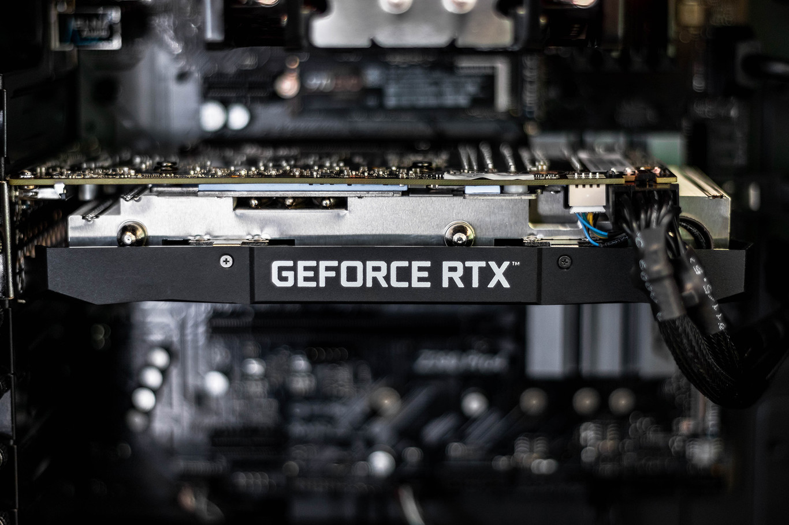

Los controladores son circuitos de entrada que tienen todas las impresoras. Son los que procesan la información en primer lugar para saber exactamente qué les está llegando y como manipular los datos. Por ejemplo, un controlador de una impresora recoge los datos que proceden del PC y los convierte en datos de imagen que deberán pasar a lo que llamamos video interface de la impresora.
1. El controlador recibe un dato del ordenador. Ese dato es el número 41h. según una tabla el controlador interpreta que 41h quiere decir A .
2. Tras interpretar el dato como una A el controlador busca en sus fuentes la forma de esa letra.
3. Una vez se ha creado toda la imagen de una página esta se le pasa al video interface. Los datos de una página pasados a imagen se llaman datos rasterizados o rípeados. Los datos rasterízados se transmiten a la video interface de línea a línea.

Si quieres regresar al temario de la unidad presiona aqui
Si quieres regresar a la página principal presiona aqui